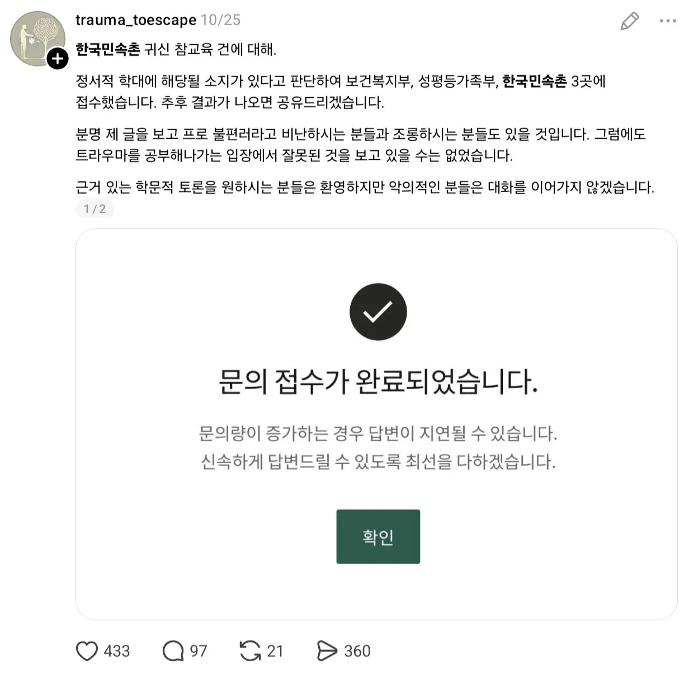
귀신 없애기 분탕중
- dc official App
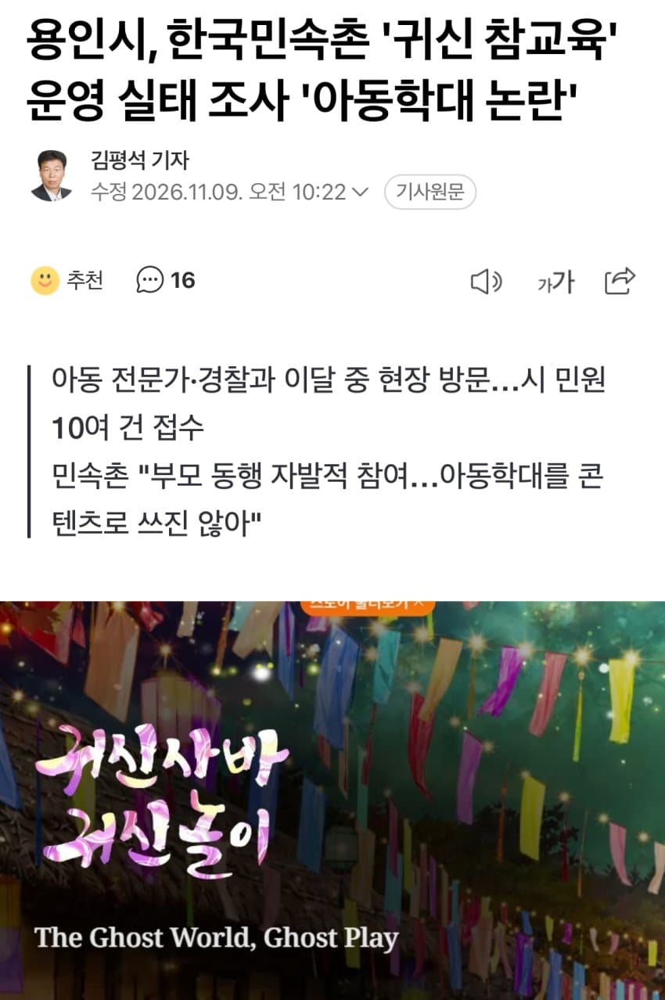
ㅅㅂ 부모들이 지 애기데려가놓고
민속촌보고 아동학대라고 하노;;
- dc official App
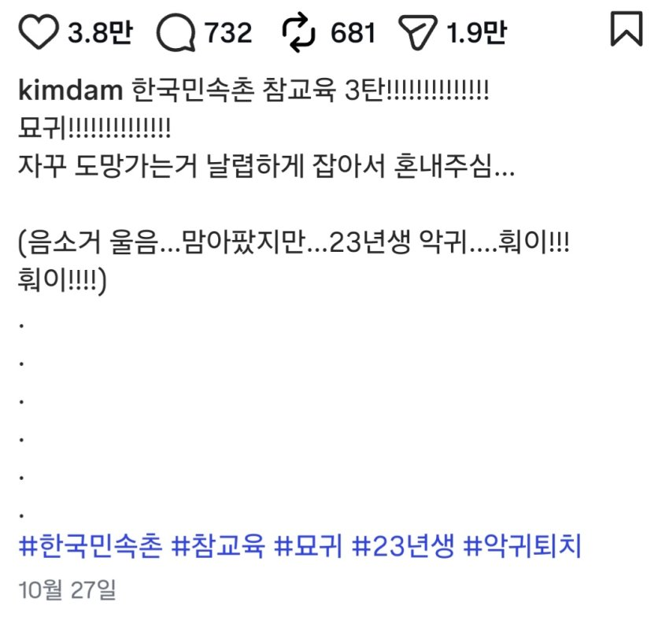
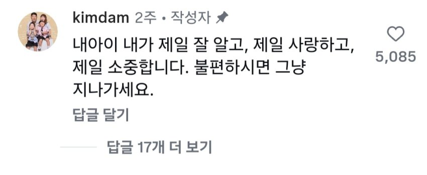
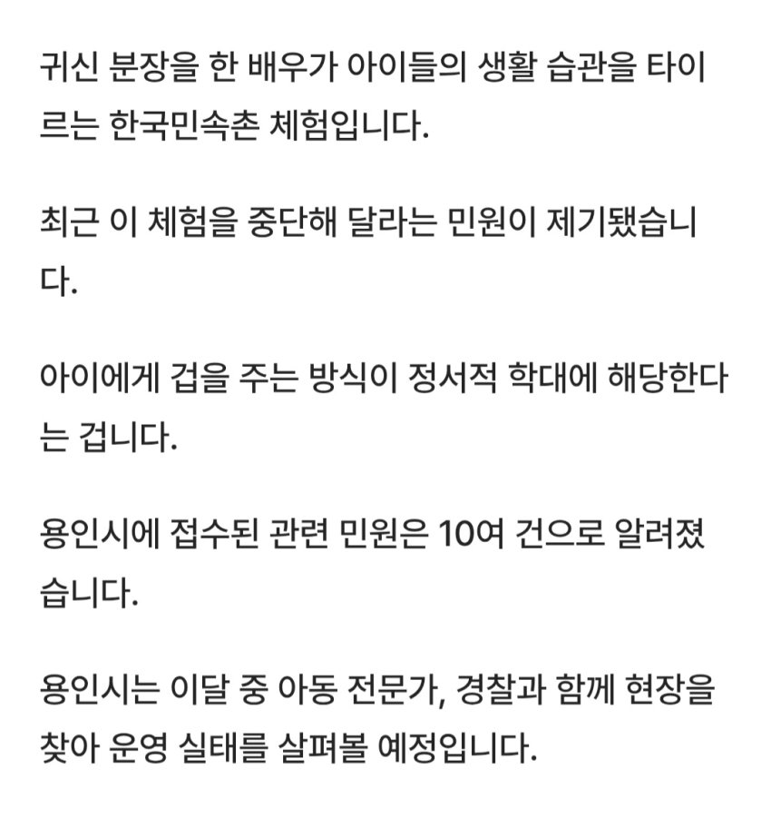
민원 10개 들어가서 조사중
- JTBC) 민속촌의 학대 민원에 민속촌 귀신 조사당해
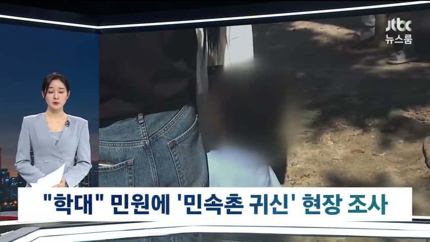
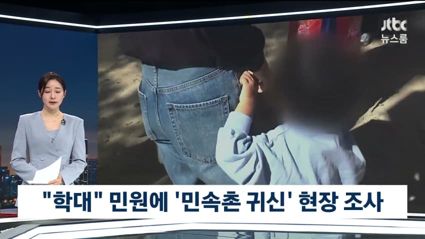
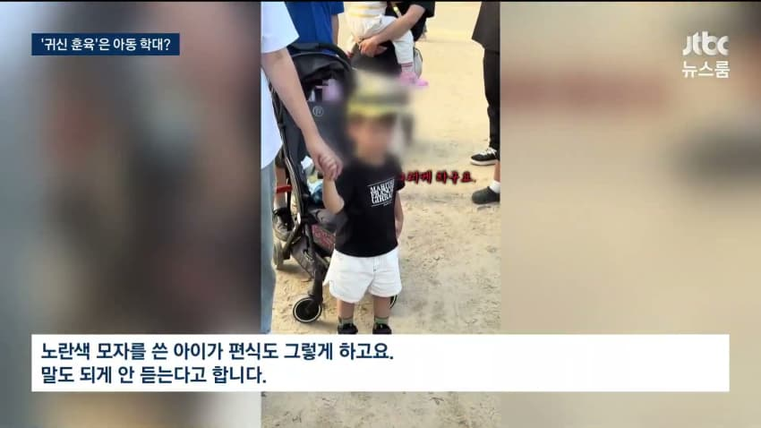
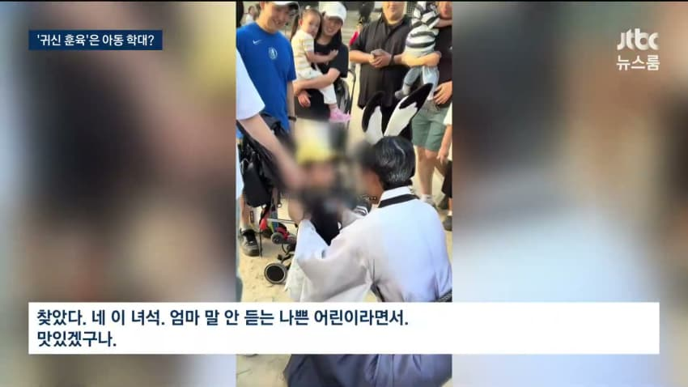
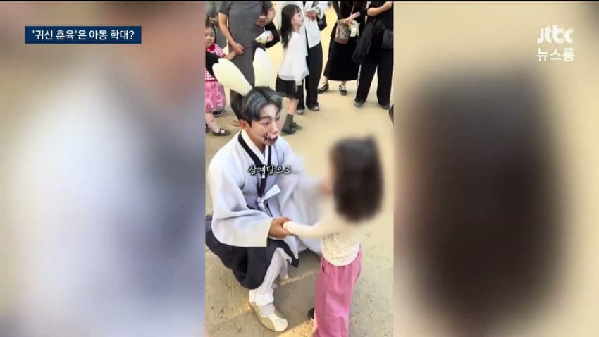
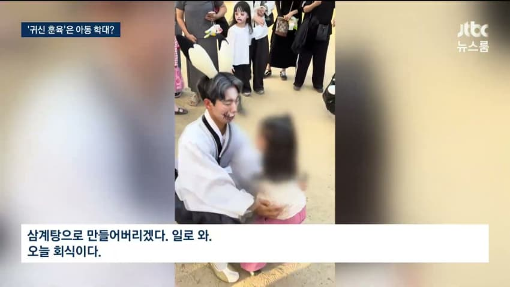
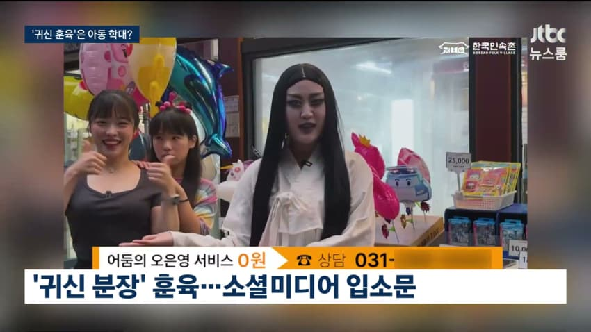
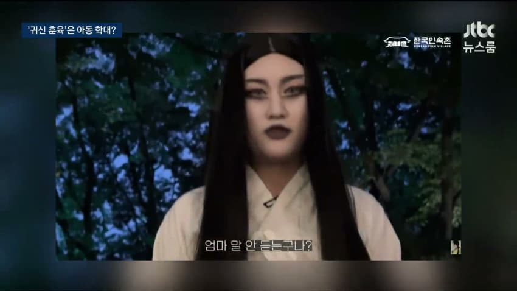
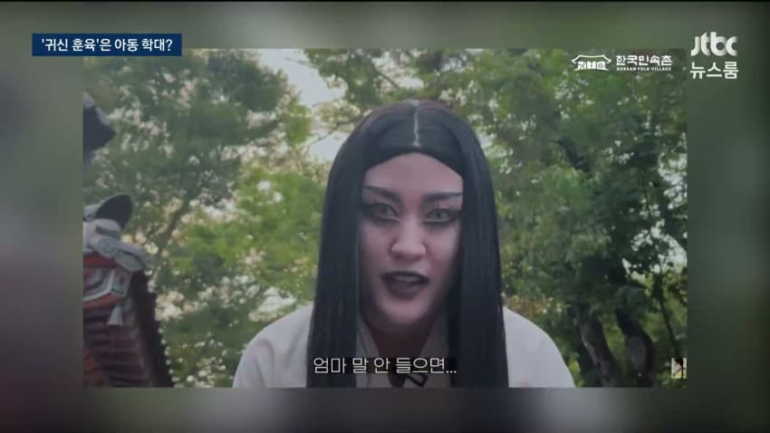
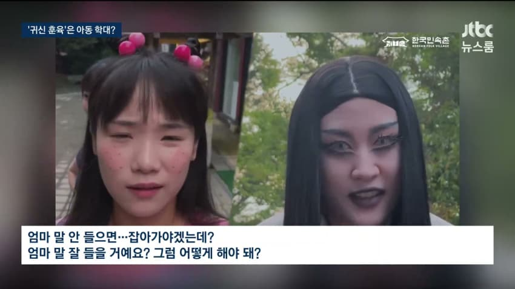
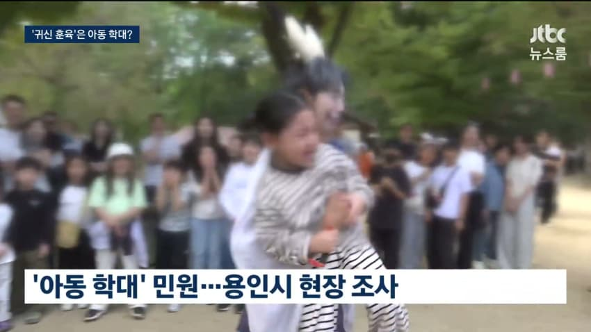
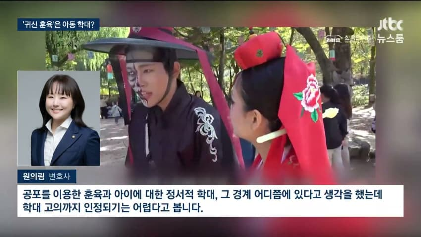
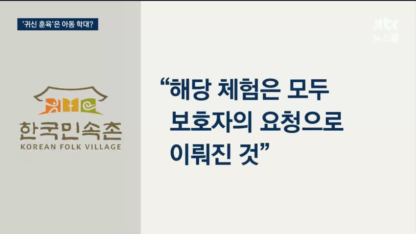
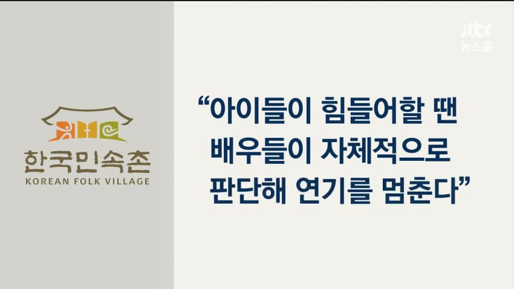
웃고 넘길 일을
민원 넣는 진상은 또 누구일까
진짜 개진상들
이게 학대면
롤러코스터나 귀신의집은 어떻게 가냐?
아동이 무서우면 전부다 학대임???
댓글
수집 당시 댓글 759개
ㅇㅇ · 11.11 09:39:06
ㅇㅇ · 11.11 09:39:11
ㅇㅇ · 11.11 09:39:16
ㅇㅇ · 11.11 09:39:23
ㅇㅇ · 11.11 09:39:33
ㅇㅇ · 11.11 09:39:44
ㅇㅇ · 11.11 09:39:49
· ㅇㅇ · 11.11 12:11:25
ㅇㅇ · 11.11 09:44:53
ㅇㅇ · 11.11 09:45:00
ㅇㅇ · 11.11 09:45:57
익명 · 11.11 09:46:40
삭제됨 · 11.11 09:50:31
· ㅇㅇ · 11.11 09:57:45
ㅇㅇ · 11.11 09:50:34
· ㅇㅇ · 11.11 09:54:41
ㅇㅇ · 11.11 09:52:07
· ㅇㅇ · 11.11 12:38:21
· ㅇㅇ · 11.11 15:20:03
· ㅇㅇ · 11.11 15:22:24
· ㅇㅇ · 11.11 15:31:33
· ㅇㅇ · 11.11 15:33:53
· ㅇㅇ · 11.11 15:37:47
· ㅇㅇ · 11.11 15:42:50
· ㅇㅇ · 11.11 15:43:38
· ㅇㅇ · 11.11 15:43:48
· ㅇㅇ · 11.11 15:47:32
· ㅇㅇ · 11.11 15:50:33
· ㅇㅇ · 11.11 15:51:14
· ㅇㅇ · 11.11 15:51:40
· ㅇㅇ · 11.11 15:51:49
· ㅇㅇ · 11.11 15:52:42
ㅇㅇ · 11.11 09:53:14
· ㅇㅇ · 11.11 12:38:30
ㅇㅇ · 11.11 09:57:27
· ㅇㅇ · 11.11 12:39:04
야이 · 11.11 10:11:29
ㅇㅇ · 11.11 10:12:56
ㅇㅇ · 11.11 10:13:10
ㅇㅇ · 11.11 10:13:20
ㅇㅇ · 11.11 10:16:43
· ㅇㅇ · 11.11 10:24:21
· ㅇㅇ · 11.11 12:39:37
· ㅇㅇ · 11.11 15:03:34
· ㅇㅇ · 11.11 15:07:02
· ㅇㅇ · 11.11 15:11:49
· ㅇㅇ · 11.11 15:26:24
· ㅇㅇ · 11.11 15:30:24
· ㅇㅇ · 11.11 15:30:54
ㅇㅇ · 11.11 10:17:15
ㅇㅇ · 11.11 10:20:37
ㅇㅇ · 11.11 10:47:44
ㅇㅇ · 11.11 10:55:27
ㅇㅇ · 11.11 10:55:58
· ㅇㅇ · 11.11 12:39:19
ㅇㅇ · 11.11 11:02:30
· ㅇㅇ · 11.11 12:38:52
ㅇㅇ · 11.11 11:24:51
ㅇㅇ · 11.11 11:31:04
ㅇㅇ · 11.11 11:41:16
ㅇㅇ · 11.11 11:42:58
ㅇㅇ · 11.11 11:49:34
ㅇㅇ · 11.11 12:14:28
ㅇㅇ · 11.11 12:37:43
qq · 11.11 12:40:53
ㅇㅇ · 11.11 12:41:53
ㅇㅇ · 11.11 12:47:09
ㅇㅇ · 11.11 12:57:39
ㅇㅇ · 11.11 12:57:56
ㅇㅇ · 11.11 13:02:39
ㄴㅇㄹ · 11.11 13:04:31
ㅇㅇ · 11.11 13:05:55
형님 · 11.11 13:08:01
· ㅇㅇ · 11.11 15:02:23
ㅇㅇ · 11.11 13:08:04
ㅇㅇ · 11.11 13:08:33
ㅇㅇ · 11.11 13:16:33
ㅇㅇ · 11.11 13:16:35
ㅇㅇ · 11.11 13:31:38
ㅇㅇ · 11.11 13:46:03
ㅇㅇ · 11.11 13:48:44
ㅇㅇ · 11.11 13:49:51
ㅇㅇ · 11.11 13:50:37
ㅇㅇ · 11.11 13:54:40
· ㅇㅇ · 11.11 14:59:33
Liaa · 11.11 13:54:49
ㅇㅇ · 11.11 14:03:51
ㅇㅇ · 11.11 14:04:54
오스만제국 · 11.11 14:08:35
ㅇㅇ · 11.11 14:12:32
모든게 불편해
해병대학교 · 11.11 14:18:35
ㅇㅇ · 11.11 14:36:06
ㅇㅇ · 11.11 14:38:29
ㅇㅇ · 11.11 15:01:58
· ㅇㅇ · 11.11 15:04:34
ㅇㅇ · 11.11 15:20:21
ㅇㅇ · 11.11 15:21:31
ㅇㅇ · 11.11 15:42:19
Gloved 1 · 11.11 15:54:32
ㅇㅇ · 11.11 16:05:39
· ㅇㅇ · 11.11 02:13:41
삭제됨 · 11.11 00:57:17
· ㅇㅇ · 11.11 08:10:09
· ㅇㅇ · 11.11 09:50:33
ㅇㅇ · 11.11 00:58:25
· ㅇㅇ · 11.11 00:58:42
ㅇㅇ · 11.11 00:58:45
ㅇㅇ · 11.11 01:01:46
ㅇㅇ · 11.11 01:07:02
ㅇㅇ · 11.11 01:08:38
베이린 · 11.11 01:08:52
· ㅇㅇ · 11.11 03:24:44
· ㅇㅇ · 11.11 09:43:28
ㅇㅇ · 11.11 01:24:31
ㅇㅇ · 11.11 01:31:40
ㅇㅇ · 11.11 01:32:16
ㅇㅇ · 11.11 01:39:49
· ㅇㅇ · 11.11 10:25:02
ㅇㅇ · 11.11 01:52:01
ㅇㅇ · 11.11 02:00:36
ㅇㅇ · 11.11 02:08:28
· ㅇㅇ · 11.11 10:07:29
ㅇㅇ · 11.11 02:12:38
ㅇㅇ · 11.11 02:17:16
ㅇㅇ · 11.11 02:19:26
ㅇㅇ · 11.11 02:19:32
· ㅇㅇ · 11.11 02:20:54
· ㅇㅇ · 11.11 03:25:19
· ㅇㅇ · 11.11 03:25:54
· ㅇㅇ · 11.11 03:33:03
· ㅇㅇ · 11.11 03:37:22
· ㅇㅇ · 11.11 03:41:20
· ㅇㅇ · 11.11 09:03:44
· ㅇㅇ · 11.11 09:44:53
ㅇㅇ · 11.11 02:22:59
ㅇㅇ · 11.11 02:26:52
ㅇㅇ · 11.11 02:28:42
ㅇㅇ · 11.11 02:37:02
ㅇㅇ · 11.11 02:49:51
ㅇㅇ · 11.11 02:58:44
번개장터 · 11.11 03:35:28
· ㅇㅇ · 11.11 08:45:52
· 번개장터 · 11.11 13:50:24
이노마 · 11.11 03:43:17
· ㅇㅇ · 11.11 09:56:14
ㅇㅇ · 11.11 04:07:30
ㅇㅇ · 11.11 04:28:24
· ㅇㅇ · 11.11 14:32:13
ㅇㅇ · 11.11 04:29:32
ㅇㅇ · 11.11 04:32:06
ㅇㅇ · 11.11 04:32:11
ㅇㅇ · 11.11 04:38:12
ㅇㅇ · 11.11 04:54:14
ㅇㅇ · 11.11 05:16:21
ㅇㅇ · 11.11 05:30:48
ㅇㅇ · 11.11 05:46:29
ㅇㅇ · 11.11 06:04:13
ㅇㅇ · 11.11 06:07:11
ㅇㅇ · 11.11 06:07:11
ㅇㅇ · 11.11 06:10:02
ㅇㅇ · 11.11 06:19:39
ㅇㅇ · 11.11 06:38:56
ㅇㅇ · 11.11 06:44:13
ㅇㅇ · 11.11 06:50:20
ㅇㅇ · 11.11 06:53:07
ㅇㅇ · 11.11 06:55:00
ㅋㅋ · 11.11 07:18:04
ㅇㅇ · 11.11 07:37:54
o o · 11.11 07:47:06
ㅇㅇ · 11.11 07:54:56
· ㅇㅇ · 11.11 13:17:16
ㅇㅇ · 11.11 08:11:25
· ㅇㅇ · 11.11 08:17:09
· ㅇㅇ · 11.11 09:45:46
· ㅇㅇ · 11.11 10:23:31
ㅇㅇ · 11.11 08:16:28
ㅇㅇ · 11.11 08:23:18
ㅇㅇ · 11.11 08:24:01
· ㅇㅇ · 11.11 09:55:39
ㅇㅇ · 11.11 08:24:51
· ㅇㅇ · 11.11 14:02:59
ㅇㅇ · 11.11 08:38:50
ㅇㅇ · 11.11 08:44:20
ㅇㅇ · 11.11 08:48:09
국가호소체 · 11.11 08:50:43
· ㅇㅇ · 11.11 09:55:16
· ㅇㅇ · 11.11 10:02:39
· ㅇㅇ · 11.11 12:37:45
· ㅇㅇ · 11.11 12:37:53
· ㅇㅇ · 11.11 13:24:26
· ㅇㅇ · 11.11 13:29:25
· ㅇㅇ · 11.11 14:47:56
· ㅇㅇ · 11.11 14:48:37
· ㅇㅇ · 11.11 14:58:54
ㄴㄷ자기소개
· ㅇㅇ · 11.11 15:45:54
· ㅇㅇ · 11.11 15:46:16
ㅇㅇ · 11.11 09:00:49
꾸깽이 · 11.11 09:18:56
룬 · 11.11 09:25:17
ㅇㅇ · 11.11 09:39:01
· ㅇㅇ · 11.11 00:39:06
ㅇㅇ · 11.10 23:11:18
· ㅇㅇ · 11.10 23:12:08
· ㅇㅇ · 11.10 23:13:00
· ㅇㅇ · 11.10 23:13:25
· ㅇㅇ · 11.11 01:32:57
· ㅇㅇ · 11.11 02:01:14
· ㅇㅇ · 11.11 04:57:30
ㅇㅇ · 11.10 23:12:23
· ㅇㅇ · 11.10 23:13:26
· ㅇㅇ · 11.10 23:27:30
· ㅇㅇ · 11.11 02:09:59
· ㅇㅇ · 11.11 02:10:58
· ㅇㅇ · 11.11 02:11:32
ㅇㅇ · 11.10 23:14:33
· ㅇㅇ · 11.10 23:18:36
ㅇㅇ · 11.10 23:14:45
ㅇㅇ · 11.10 23:15:25
ㅇㅇ · 11.10 23:15:33
ㅇㅇ · 11.10 23:15:37
· 타바코쉬카 · 11.10 23:18:31
타바코쉬카 · 11.10 23:17:59
ㅇㅇ · 11.10 23:19:52
ㄷㄷㄷㄷ · 11.10 23:20:38
· ㅇㅇ · 11.10 23:24:17
너 잘모르는구나
· ㅇㅇ · 11.10 23:28:22
· ㅇㅇ · 11.10 23:29:05
ㅇㅇ · 11.10 23:21:49
ㅇㅇ · 11.10 23:23:52
· ㅇㅇ · 11.10 23:27:06
· ㅇㅇ · 11.11 01:29:19
ㅇㅇ · 11.10 23:24:26
· ㅇㅇ · 11.10 23:27:27
· ㅇㅇ · 11.11 01:30:10
ㅇㅇ · 11.10 23:29:03
ㅇㅇ · 11.10 23:29:05
ㅇㅇ · 11.10 23:29:50
ㅇㅇ · 11.10 23:31:41
ㅇㅇ · 11.10 23:31:45
ㅇㅇ · 11.10 23:32:28
ㅇㅇ · 11.10 23:33:54
· ㅇㅇ · 11.10 23:39:41
· ㅇㅇ · 11.10 23:46:19
2456778 · 11.10 23:34:58
ㅇㅇ · 11.10 23:42:58
ㅇㅇ · 11.10 23:45:02
ㅇㅇ · 11.10 23:48:06
· ㅇㅇ · 11.10 23:57:25
ㅇㅇ · 11.10 23:50:19
· ㅇㅇ · 11.11 03:21:21
ㅇㅇ · 11.10 23:51:44
· ㅇㅇ · 11.11 00:04:07
· ㅇㅇ · 11.11 00:06:41
ㅇㅇ · 11.10 23:54:49
ㅇㅇ · 11.10 23:55:23
· ㅇㅇ · 11.10 23:58:10
· ㅇㅇ · 11.11 01:32:22
· ㅇㅇ · 11.11 03:22:35
· ㅇㅇ · 11.11 03:23:07
· ㅇㅇ · 11.11 06:52:09
· 에쎄로열팰리스판매사원 · 11.11 07:10:43
ㅇㅇ · 11.10 23:56:10
ㅇㅇ · 11.10 23:57:29
민원
100개
더넣어라
ㅇㅇ · 11.10 23:58:26
ㅇㅇ · 11.10 23:58:36
· ㅇㅇ · 11.10 23:59:19
· ㅇㅇ · 11.11 00:04:37
· ㅇㅇ · 11.11 00:12:35
· ㅇㅇ · 11.11 00:15:40
· ㅇㅇ · 11.11 01:31:42
· ㅇㅇ · 11.11 02:02:36
· ㅇㅇ · 11.11 03:23:31
ㅇ · 11.11 00:00:19
ㅇㅇ · 11.11 00:03:00
ㅇㅇ · 11.11 00:05:00
· ㅇㅇ · 11.11 00:05:24
치규 · 11.11 00:06:06
정서적 학대 맞음 ㅇㅇ
ㅇㅇ · 11.11 00:06:41
ㅇㅇ · 11.11 00:07:05
ㅇㅇ · 11.11 00:09:37
· ㅇㅇ · 11.11 00:09:47
ㅇㅇ · 11.11 00:10:15
ㅇㅇ · 11.11 00:12:27
ㅇㅇ · 11.11 00:15:23
ㅇㄹ · 11.11 00:15:37
ㅇㅇ · 11.11 00:15:47
환란 전 교회 휴거 · 11.11 00:18:05
ㅇㅇ · 11.11 00:18:39
ㅇㅇ · 11.11 00:21:14
민원
폭탄
드가자
00 · 11.11 00:22:26
· ㅇㅇ · 11.11 03:24:19
· ㅇㅇ · 11.11 09:41:01
ㅇㅇ · 11.11 00:26:46
ㅇㅇ · 11.11 00:30:06
ㅇㅇ · 11.11 00:32:31
ㅇㅇ · 11.11 00:36:37
ㅇㅇ · 11.11 00:44:46
· ㅇㅇ · 11.11 01:18:50
ㅇㅇ · 11.11 00:45:39
ㅇㅇ · 11.11 00:49:53
· ㅇㅇ · 11.10 23:18:15
· ㅇㅇ · 11.10 23:18:39
ㅇㅇ · 11.10 22:39:14
ㅇㅇ · 11.10 22:40:14
· ㅇㅇ · 11.10 22:50:14
· ㅇㅇ · 11.10 22:57:37
· ㅇㅅㅇ · 11.10 23:17:30
· ㅇㅇ · 11.10 23:46:40
· ㅇㅇ · 11.10 23:57:04
ㅇㅇ · 11.10 22:40:36
· ㅇㅇ · 11.10 22:41:56
고블린슬레이어공부법 · 11.10 22:41:16
· ㅇㅇ · 11.10 22:42:34
· ㅇㅇ · 11.10 22:42:38
· 고블린슬레이어공부법 · 11.10 22:49:20
· ㅇㅇ · 11.11 12:39:52
상금이 · 11.10 22:44:39
ㅇㅇ · 11.10 22:45:46
ㅇㅇ · 11.10 22:46:00
· ㅇㅇ · 11.10 22:46:17
· ㅇㅇ · 11.10 22:46:31
· ㅇㅇ · 11.10 22:47:18
ㅇㅇ · 11.10 22:46:02
ㅇㅇ · 11.10 22:46:04
ㅇㅇ · 11.10 22:46:46
ㅇㅇ · 11.10 22:47:26
ㅇㅇ · 11.10 22:47:57
캐피탈리즘 · 11.10 22:48:02
· 캐피탈리즘 · 11.10 22:48:20
· ㅇㅇ · 11.10 22:49:03
· ㅇㅇ · 11.10 22:49:29
· 캐피탈리즘 · 11.10 22:49:31
ㅇㅇ · 11.10 22:48:15
ㅇㅇ · 11.10 22:48:38
· 기술적잭스 · 11.10 23:40:44
ㅇㅇ · 11.10 22:48:40
· ㅇㅇ · 11.10 22:49:56
· ㅇㅇ · 11.10 22:50:09
· ㅇㅇ · 11.10 22:50:20
· ㅇㅇ · 11.10 22:50:25
· ㅇㅇ · 11.10 22:51:01
· ㅇㅇ · 11.10 22:51:08
· ㅇㅇ · 11.10 22:51:21
· ㅇㅇ · 11.10 22:51:42
· ㅇㅇ · 11.10 22:51:54
· ㅇㅇ · 11.10 23:12:31
· ㅇㅇ · 11.10 23:13:18
ㅇㅇ · 11.10 22:49:29
ㅇㅇ · 11.10 22:49:29
ㅇㅇ · 11.10 22:49:51
제로콜라 · 11.10 22:50:26
ㅇㅇ · 11.10 22:51:08
· ㅇㅇ · 11.10 22:52:12
· ㅇㅇ · 11.10 22:52:23
· ㅇㅇ · 11.10 22:52:39
· ㅇㅇ · 11.10 23:54:58
ㅇㅇ · 11.10 22:51:26
삭제됨 · 11.10 22:53:01
· ㅇㅇ · 11.10 22:53:44
· ㅇㅇ · 11.10 22:53:56
· ㅇㅇ · 11.10 22:54:07
· ㅇㅇ · 11.10 22:54:20
· ㅇㅇ · 11.10 23:52:12
어쩌라고
· ㅇㅇ · 11.10 23:56:33
· ㅇㅇ · 11.10 23:57:43
맞고다닌 찐따 ㅋㅋㅋㅋㅋㅋㅋㅋㅋㅋㅋㅋ
ㅇㅇ · 11.10 22:53:31
ㅇㅇ · 11.10 22:54:23
ㅇㅇ · 11.10 22:55:06
ㅇㅇ · 11.10 22:55:36
ㅇㅇ · 11.10 22:57:04
· ㅇㅇ · 11.10 23:13:11
ㅇㅇ · 11.10 22:57:12
· ㅇㅇ · 11.10 23:02:02
· ㅇㅇ · 11.10 23:05:28
· ㅇㅇ · 11.10 23:07:16
클갤러 · 11.10 22:57:13
ㅇㅇ · 11.10 22:58:46
운빨좆망겜 · 11.10 22:58:50
ㅇㅇ · 11.10 22:59:04
ㅇㅇ · 11.10 23:02:19
· ㅇㅇ · 11.10 23:02:35
· ㅇㅇ · 11.10 23:02:43
· ㅇㅇ · 11.11 08:26:15
ㅇㅇ · 11.10 23:03:49
· ㅇㅇ · 11.10 23:09:53
· ㅇㅇ · 11.10 23:15:35
· ㅇㅇ · 11.10 23:24:57
· ㅇㅇ · 11.11 00:09:00
· ㅇㅇ · 11.11 01:46:36
빻윾땡 · 11.10 23:05:47
ㅇㅇ · 11.10 23:07:27
· ㅇㅇ · 11.10 23:08:45
· ㅇㅇ · 11.11 00:14:51
ㅇㅇ · 11.10 23:07:49
Adriel · 11.10 23:08:17
· Adriel · 11.10 23:08:31
ㅇㅇ · 11.10 23:08:54
· ㅇㅇ · 11.10 23:26:39
· ㅇㅇ · 11.10 23:48:03
ㅇㅇ · 11.10 23:11:08
ㅇㅇ · 11.10 22:19:41
· ㅇㅇ · 11.10 22:19:45
삭제됨 · 11.10 22:19:57
· ㅇㅇ · 11.10 22:47:46
· ㅇㅇ · 11.10 22:51:43
ㅇㅇ · 11.10 22:20:18
· ㅇㅇ · 11.10 22:21:03
· ㅇㅇ · 11.10 22:47:51
ㅇㅇ · 11.10 22:20:19
· ㅇㅇ · 11.10 22:21:09
· ㅇㅇ · 11.10 22:21:29
ㅇㅇ · 11.10 22:21:21
· ㅇㅇ · 11.10 22:21:39
ㅇㅇ · 11.10 22:21:33
· ㅇㅇ · 11.10 22:22:18
ㅇㅇ · 11.10 22:24:11
· ㅇㅇ · 11.10 22:24:42
· ㅇㅇ · 11.10 22:48:10
ㅇㅇ · 11.10 22:24:27
· ㅇㅇ · 11.10 22:48:55
ㅇㅇ · 11.10 22:24:59
· ㅇㅇ · 11.10 22:25:23
ㅇㅇ · 11.10 22:26:06
· ㅇㅇ · 11.10 22:26:29
ㅇㅇ · 11.10 22:29:00
ㅇㅇ · 11.10 22:29:49
ㅇㅇ · 11.10 22:30:20
· ㅇㅇ · 11.10 22:32:44
· ㅇㅇ · 11.10 22:33:01
· ㅇㅇ · 11.10 22:33:56
ㅇㅇ · 11.10 22:30:55
ㅇㅇ · 11.10 22:31:00
· ㅇㅇ · 11.10 22:35:18
ㅇㅇ · 11.10 22:31:38
ㅇㅇ · 11.10 22:31:42
ㅇㅇ · 11.10 22:31:52
· ㅇㅇ · 11.10 22:37:27
· ㅇㅇ · 11.10 22:39:56
· ㅇㅇ · 11.10 22:44:53
팩트만말해요 · 11.10 22:32:16
· ㅇㅇ · 11.10 22:34:25
· ㅇㅇ · 11.10 22:36:29
· 팩트만말해요 · 11.11 09:25:02
ㅇㅇ · 11.10 22:33:30
ㅇㅇ · 11.10 22:34:11
ㅇㅇ · 11.10 22:35:10
ㅇㅇ · 11.10 22:35:49
ㅇㅇ · 11.10 22:36:29
ㅇㅇ · 11.10 22:37:01
벨링엄 · 11.10 22:37:06
· ㅇㅇ · 11.10 22:38:40
· 벨링엄 · 11.10 22:40:53
· ㅇㅇ · 11.10 22:43:24
· ㅇㅇ · 11.10 22:43:44
· 벨링엄 · 11.10 22:44:20
· ㅇㅇ · 11.10 22:44:59
· ㅇㅇ · 11.10 22:46:23
· ㅇㅇ · 11.10 22:47:51
· ㅇㅇ · 11.10 22:48:08
· 벨링엄 · 11.10 22:54:38
· 벨링엄 · 11.10 22:57:29
· ㅇㅇ · 11.10 22:57:59
· ㅇㅇ · 11.10 22:58:28
· ㅇㅇ · 11.10 22:59:44
· ㅇㅇ · 11.10 23:01:20
· 벨링엄 · 11.10 23:01:21
· ㅇㅇ · 11.10 23:02:20
· ㅇㅇ · 11.10 23:02:30
· ㅇㅇ · 11.10 23:02:41
· 벨링엄 · 11.10 23:04:21
· ㅇㅇ · 11.10 23:05:09
· ㅇㅇ · 11.10 23:05:17
· ㅇㅇ · 11.10 23:05:30
· 벨링엄 · 11.10 23:07:03
· ㅇㅇ · 11.10 23:10:13
· ㅇㅇ · 11.10 23:10:23
· ㅇㅇ · 11.10 23:10:38
· ㅇㅇ · 11.10 23:11:21
· ㅇㅇ · 11.10 23:11:27
· ㅇㅇ · 11.10 23:19:02
· ㅇㅇ · 11.10 23:29:31
· ㅇㅇ · 11.10 23:29:40
· ㅇㅇ · 11.11 09:22:20
ㅇㅇ · 11.10 22:37:20
· ㅇㅇ · 11.10 22:38:55
· ㅇㅇ · 11.10 22:39:20
· ㅇㅇ · 11.10 22:39:44
· ㅇㅇ · 11.10 22:40:09
ㅇㅇ · 11.10 22:38:30
ㅇㅇ · 11.10 22:38:47
· ㅇㅇ · 11.10 22:40:43
· ㅇㅇ · 11.10 22:41:17
· ㅇㅇ · 11.10 22:42:28
· ㅇㅇ · 11.10 22:43:13
· ㅇㅇ · 11.10 22:45:10
· ㅇㅇ · 11.10 22:45:22
· ㅇㅇ · 11.10 22:45:36
· ㅇㅇ · 11.10 22:46:48
· ㅇㅇ · 11.10 22:47:01
· ㅇㅇ · 11.10 23:12:01
ㅇㅇ · 11.10 22:02:09
ㅇㅇ · 11.10 22:02:12
ㅇㅇ · 11.10 22:02:24
· ㅇㅇ · 11.10 22:02:31
ㅇㅇ · 11.10 22:02:26
· ㅇㅇ · 11.10 22:03:27
ㅇㅇ · 11.10 22:02:46
ㅇㅇ · 11.10 22:02:54
· ㅇㅇ · 11.10 22:04:09
· ㅇㅇ · 11.10 22:08:38
· ㅇㅇ · 11.10 22:09:01
· ㅇㅇ · 11.10 22:20:48
ㅇㅇ · 11.10 22:03:27
ㅇㅇ · 11.10 22:03:41
· ㅇㅇ · 11.10 22:04:05
· ㅇㅇ · 11.10 22:04:31
· ㅇㅇ · 11.10 22:04:55
· ㅇㅇ · 11.10 22:05:35
· ㅇㅇ · 11.10 22:06:06
· ㅇㅇ · 11.10 22:09:46
· ㅇㅇ · 11.10 22:18:49
· ㅇㅇ · 11.10 22:23:37
· ㅇㅇ · 11.10 22:57:55
ㅇㅇ · 11.10 22:04:01
· ㅇㅇ · 11.10 22:05:13
· ㅇㅇ · 11.10 22:10:09
· ㅇㅇ · 11.10 22:15:28
· ㅇㅇ · 11.11 00:08:02
ㅇㅇ · 11.10 22:04:47
ㅇㅇ · 11.10 22:05:42
ㅇㅇ · 11.10 22:05:44
ㅇㅇ · 11.10 22:05:49
· ㅇㅇ · 11.10 22:10:15
· ㅇㅇ · 11.10 22:17:42
· ㅇㅇ · 11.10 22:20:37
ㅇㅇ · 11.10 22:06:05
ㅇㅇ · 11.10 22:06:25
삭제됨 · 11.10 22:06:25
· ㅇㅇ · 11.10 22:06:33
· ㅇㅇ · 11.10 22:24:26
ㅇㅇ · 11.10 22:06:37
ㅇㅇ · 11.10 22:06:41
ㅇㅇ · 11.10 22:06:43
ㅇㅇ · 11.10 22:06:52
ㅇㅇ · 11.10 22:07:09
· ㅇㅇ · 11.10 22:09:32
· ㅇㅇ · 11.10 22:37:34
ㅇㅇ · 11.10 22:07:36
ㅇㅇ · 11.10 22:08:43
ㅇㅇ · 11.10 22:09:51
ㅂㅈㄷㅂ · 11.10 22:09:53
ㅇㅇ · 11.10 22:10:15
ㅇㅇ · 11.10 22:10:35
· ㅇㅇ · 11.10 22:11:53
· ㅇㅇ · 11.10 22:13:15
· ㅇㅇ · 11.10 22:20:20
· ㅇㅇ · 11.10 22:50:59
ㅇㅇ · 11.10 22:11:06
· ㅇㅇ · 11.10 22:18:55
ㅇㅇ · 11.10 22:11:07
ㅇㅇ · 11.10 22:11:39
ㅇㅇ · 11.10 22:11:59
ㅡㅡ · 11.10 22:12:06
ㅇㅇ · 11.10 22:13:19
삭제됨 · 11.10 22:13:38
· ㅇㅇ · 11.10 22:13:46
· ㅇㅇ · 11.10 22:22:34
삭제됨 · 11.10 22:13:55
· 좌좡면한그륵뭐그런쇼망 · 11.10 22:16:01
· ㅇㅇ · 11.10 22:20:00
ㅇㅇ · 11.10 22:14:00
· ㅇㅇ · 11.10 22:14:58
· ㅇㅇ · 11.10 22:22:27
· ㅇㅇ · 11.10 22:47:02
ㅇㅇ · 11.10 22:14:08
· ㅇㅇ · 11.10 22:27:09
ㅇㅇ · 11.10 22:14:48
· ㅇㅇ · 11.10 22:15:23
· ㅇㅇ · 11.10 22:16:06
· ㅇㅇ · 11.10 22:16:55
ㅇㅇ · 11.10 22:15:04
· ㅇㅇ · 11.10 22:15:39
· ㅇㅇ · 11.10 22:15:56
· ㅇㅇ · 11.10 22:19:52
· ㅇㅇㅇ · 11.10 22:20:03
· ㅇㅇ · 11.10 23:42:31
ㅇㅇ · 11.10 22:16:29
ㅇㅇ · 11.10 22:16:48
무노 · 11.10 22:17:01
ㅇㅇ · 11.10 22:17:30
ㅇㅇ · 11.10 22:17:33
노키즈존이 답이다
ㅇㅇ · 11.10 22:18:09
ㅇㅇ · 11.10 22:18:44
· ㅇㅇ · 11.10 22:22:02
· ㅇㅇ · 11.10 22:47:15
ㅇㅇ · 11.10 22:18:46
· ㅇㅇ · 11.10 22:20:33
· ㅇㅇ · 11.10 22:22:10
ㅇㅇ · 11.10 22:18:52
· ㅇㅇ · 11.10 22:40:56
· ㅇㅇ · 11.10 21:48:14
· ㅇㅇㄴ · 11.10 22:07:13
· ㅇㅇㅇ · 11.10 22:19:00
· ㅇㅇ · 11.10 23:21:50
ㅇㅇ · 11.10 21:46:33
· ㅇㅇㅇ · 11.10 21:47:55
ㅇㅇ · 11.10 21:46:34
· ㅇㅇ · 11.10 22:07:23
ㅇㅇ · 11.10 21:46:58
ㅇㅇㅇ · 11.10 21:47:06
ㅇㅇ · 11.10 21:48:11
75kg · 11.10 21:48:48
ㅇㅇ · 11.10 21:48:48
ㅇㅇ · 11.10 21:48:58
ㅇㅇ · 11.10 21:49:13
ㅇㅇ · 11.10 21:50:15
ㅇㅇ · 11.10 21:50:28
돌아온애우 · 11.10 21:50:39
ㅇㅇ · 11.10 21:50:42
ㅇㅇ · 11.10 21:50:57
ㅇㅇ · 11.10 21:51:15
· 해갤러 · 11.10 22:03:18
ㅇㅇ · 11.10 21:51:23
ㅇㅇ · 11.10 21:51:26
· ㅇㅇ · 11.10 21:53:51
갓겜이 · 11.10 21:51:27
ㅇㅇ · 11.10 21:51:50
ㅇㅇ · 11.10 21:52:01
코마리 · 11.10 21:52:31
· ㅇㅇ · 11.10 22:07:37
· ㅇㅇ · 11.11 05:01:24
· ㅇㅇ · 11.11 05:01:33
ㅇㅇ · 11.10 21:52:39
ㅇㅇ · 11.10 21:52:54
ㅇㅇ · 11.10 21:52:56
미쿠닷컴 · 11.10 21:53:07
· ㅇㅇ · 11.10 22:07:42
ㅇㅇ · 11.10 21:53:14
· ㅇㅇ · 11.10 21:53:24
ㅇㅇ · 11.10 21:53:42
삭제됨 · 11.10 21:53:46
· ㅇㅇ · 11.10 21:54:57
· ㅇㅇ · 11.10 21:55:09
· ㅇㅇ · 11.10 21:56:38
· ㅇㅇ · 11.10 21:56:42
· ㅇㅇ · 11.10 22:08:02
ㅇㅇ · 11.10 21:54:01
ㅇㅇ · 11.10 21:54:02
ㅇㅇ · 11.10 21:54:25
ㅇㅇ · 11.10 21:54:39
· ㅇㅇ · 11.10 21:55:28
· ㅇㅇ · 11.10 21:55:29
· ㅇㅇ · 11.10 21:57:09
· ㅇㅇ · 11.10 21:58:57
· ㅇㅇ · 11.10 22:02:26
· ⛩️⛩️⛩️ · 11.10 22:04:23
· 모랑 · 11.10 22:45:47
ㅇㅇ · 11.10 21:55:11
음치킨냐미 · 11.10 21:55:29
ㅇㅇ · 11.10 21:55:30
ㅇㅇ · 11.10 21:56:08
ㅇㅇ · 11.10 21:56:19
ㅇㅇ · 11.10 21:57:07
ㅇㅇ · 11.10 21:57:15
· ㅇㅇ · 11.10 22:00:17
ㅇㅇ · 11.10 21:58:08
땃다다 · 11.10 21:58:15
· ㅇㅇ · 11.10 23:28:27
ㅇㅈ
ㅇㅇ · 11.10 21:58:24
· ㅇㅇ · 11.10 22:01:04
· ㅇㅇ · 11.10 22:09:09
· ㅇㅇ · 11.10 22:14:16
· ㅇㅇ · 11.10 23:18:22
ㅇㅇ · 11.10 21:59:08
· ㅇㅇ · 11.10 22:01:45
· ㅇㅇ · 11.10 22:15:45
· ㅇㅇ · 11.10 23:19:12
ㅇㅇ · 11.10 21:59:14
· ㅇㅇ · 11.10 22:01:29
· ㅂㅈㄷㅂ · 11.10 22:16:17
· ㅇㅇ · 11.10 22:22:49
해갤러 · 11.10 21:59:17
ㅇㅇ · 11.10 21:59:30
시끄러 · 11.10 21:59:32
ㅇㅇ · 11.10 21:59:56
ㅇㅇ · 11.10 22:00:00
· ㅇㅇ · 11.10 22:01:33
· ㅇㅇ · 11.10 22:01:58
ㅇㅇ · 11.10 22:00:05
ㅇㅇ · 11.10 22:00:23
ㅇㅇ · 11.10 22:00:32
겐쉰프 · 11.10 22:00:36
VWVWV · 11.10 22:00:48
ㅇㅇ · 11.10 22:01:35
ㅇㅇ · 11.10 22:01:45
학대 맞지
· ㅇㅇ · 11.10 22:02:08
재밌는 사람
· ㅇㅇ · 11.10 22:02:18
부모 + 관객
· ㅇㅇ · 11.10 22:02:41
우는 사람
· ㅇㅇ · 11.10 22:02:56
자식
ㅇㅇ · 11.10 22:02:00
땨뗘(봇) · 11.10 21:40:05
ㅇㅇ · 11.10 21:40:46
코스피의유쾌한반란 · 11.10 21:40:47
かなたん · 11.10 21:41:05
· 샨테 · 11.10 21:44:03
· 암타황제강시현 · 11.10 21:44:55
ㅇㅇ · 11.10 21:41:13
· ㅇㅇ · 11.10 21:41:35
· ㅇㅇ · 11.10 21:42:45
· ㅇㅇ · 11.10 22:03:38
ㅇㅇ · 11.10 21:41:28
· 소설쟁이 · 11.10 21:43:37
삭제됨 · 11.10 21:41:37
· ㅇㅇ · 11.10 21:41:59
· ㅇㅇ · 11.10 21:42:19
ㅇㅇ · 11.10 21:41:42
· ㅇㅇ · 11.10 21:42:46
ㅇㅇ · 11.10 21:41:48
dorosi · 11.10 21:41:55
ㅇㅇ · 11.10 21:41:57
1111 · 11.10 21:42:08
· ㅇㅇ · 11.10 22:04:22
· ㅇㅇ · 11.10 23:20:44
ㅇㅇ · 11.10 21:42:10
ㅇㅇ · 11.10 21:42:46
ㅇㅇ · 11.10 21:42:52
ㅇㅇ · 11.10 21:42:54
샨테 · 11.10 21:43:02
· 샨테 · 11.10 21:43:32
· 프븨 · 11.10 21:45:12
· 암타황제강시현 · 11.10 21:45:14
· 샨테 · 11.10 21:46:38
· かなたん · 11.10 21:47:26
· ㅇㅇ · 11.10 21:49:05
· 프븨 · 11.10 21:50:06
· 프븨 · 11.10 21:50:21
· ㅇㅇ · 11.10 21:51:39
· ㅇㅇ · 11.11 08:47:45
ㅇㅇ · 11.10 21:43:25
· 소설쟁이 · 11.10 21:44:03
ㅇㅇ · 11.10 21:43:32
ㅇㅇ · 11.10 21:43:32
· ㅇㅇ · 11.10 21:43:52
· ㅇㅇ · 11.10 21:44:43
· ㅇㅇ · 11.10 21:45:08
· ㅇㅇ · 11.10 21:45:25
· ㅇㅇ · 11.10 21:53:16
ㅇㅇ · 11.10 21:44:31
ㅇㅇ · 11.10 21:44:32
· ㅇㅇ · 11.10 21:44:58
· ㅇㅇ · 11.10 21:46:59
· ㅇㅇ · 11.10 22:01:20
ㅇㅇ · 11.10 21:44:42
암타황제강시현 · 11.10 21:44:51
· 샨테 · 11.10 21:46:59
· かなたん · 11.10 21:47:35
ㅇㅇ · 11.10 21:45:40
ㅇㅇ · 11.10 21:45:44
· ㅇㅇㅇ · 11.10 21:47:34